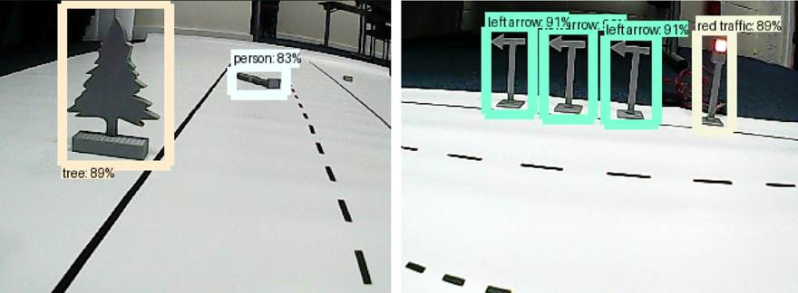

Machine Vision
A car that learned to see the road.
For my MSc machine-learning project I taught a small robot car to drive itself: a camera, a Raspberry Pi, and two neural networks small enough to run on it in real time.
87.8%R² for steering angle from the CNN
98.2%R² for speed
0.96mAP@0.5 for the SSD-MobileNetV2 detector
45fpson a Raspberry Pi 4

What the car sees: detections with their confidence scores, straight from the onboard model.
How it drives
One network reads the camera and decides steering and speed; a second spots signs, lights and people and tells the car when to stop or turn.
Steering (R²)87.8%
Speed (R²)98.2%
Detection (mAP@0.5)0.96
What I built
- Collected and labelled the dataDriving footage from the car itself, labelled for steering, speed and objects.
- Trained a CNN driverRegression on steering angle and speed from single camera frames.
- Fine-tuned a detectorSSD-MobileNetV2 for signs, traffic lights and people, small enough for the Pi.
- Put it on the roadBoth models running live on a SunFounder PiCar-V at 45 frames per second.
Toolkit
MSc project at the University of Nottingham, supervised by Dr Maggie Lieu.
Next roomThe Bench